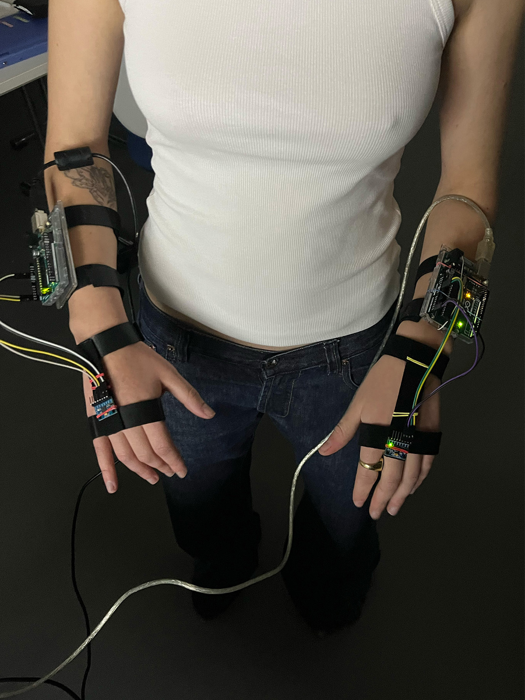
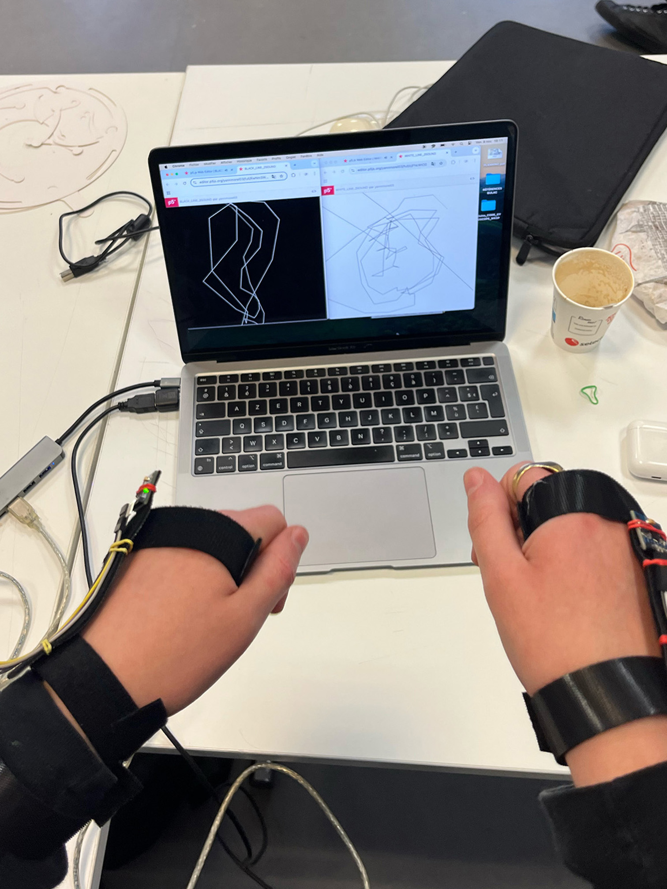
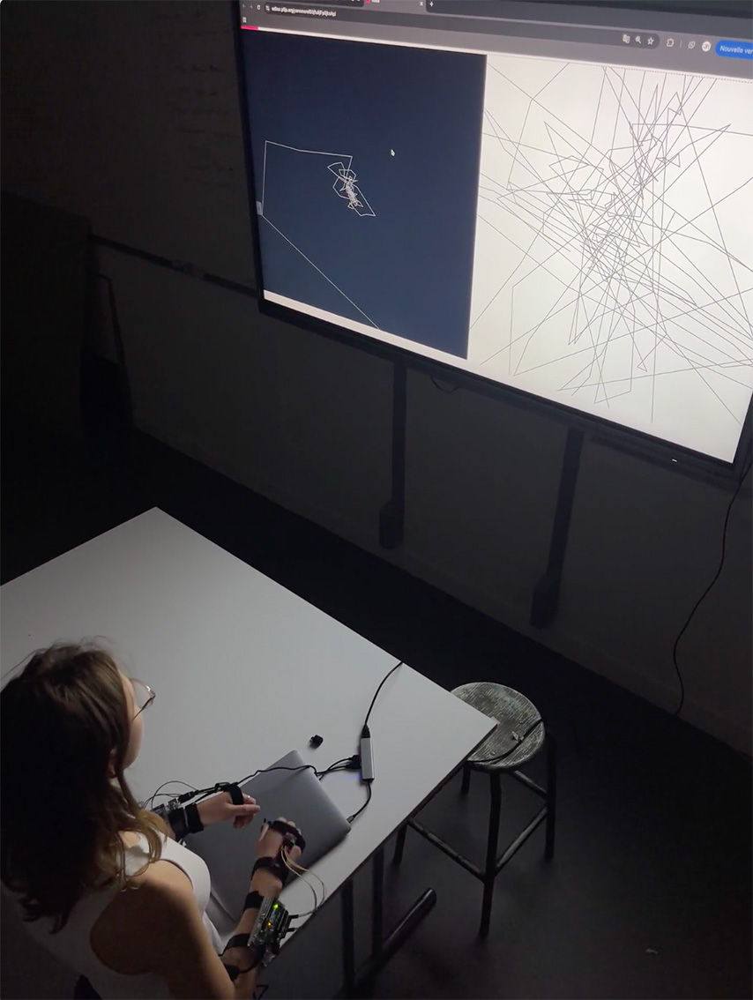
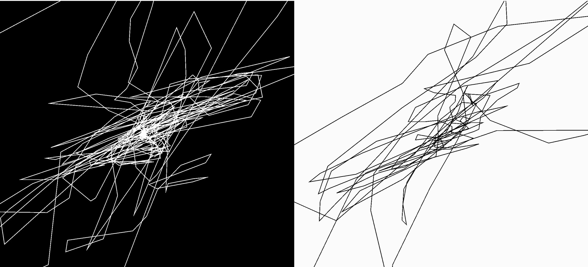
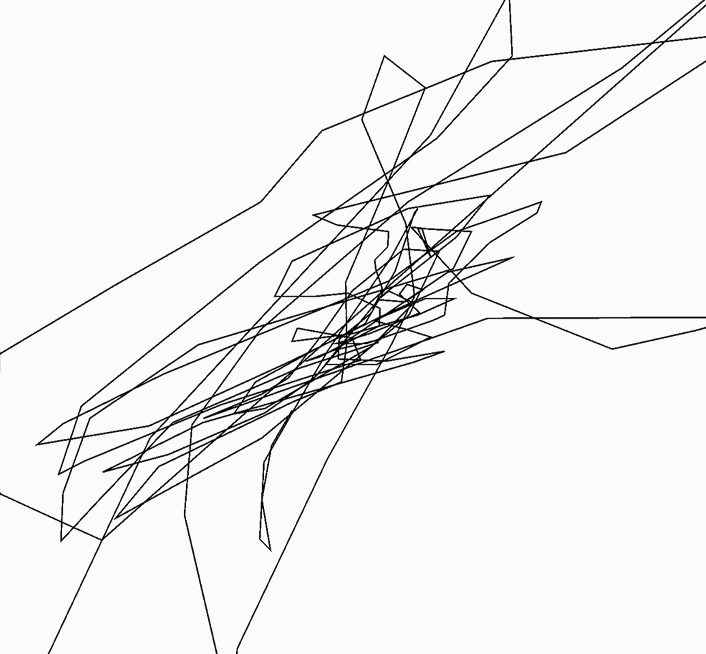

Workshop avec Hugo Hilaire sur la création d’un code interactif.
En binôme, nous avons conçu un dispositif utilisant un capteur gyroscopique contrôlé par les mains (via Arduino).
Sur P5.js, nous avons développé un code génératif et interactif : le dessin se forme et évolue en suivant les mouvements des mains, tandis que le son réagit simultanément.
Le code donne l’impression d’un dialogue et d’un jeu entre l’image, le son et la main. Draw stop draw est une nouvelle manière d'appréhender le geste dans le dessin.




